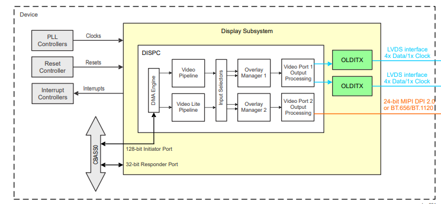
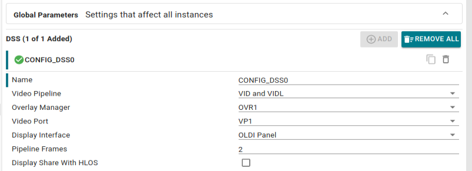
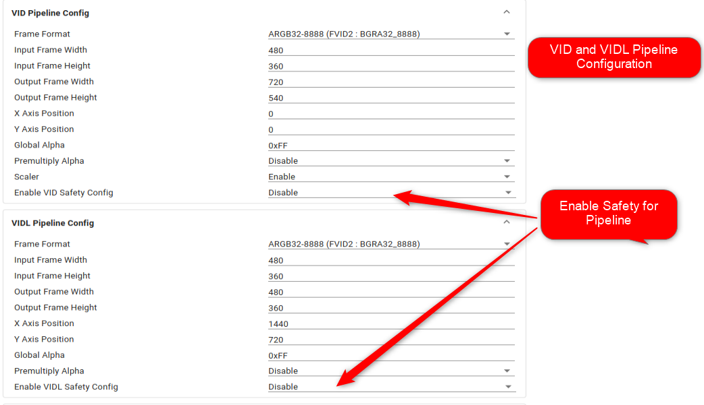
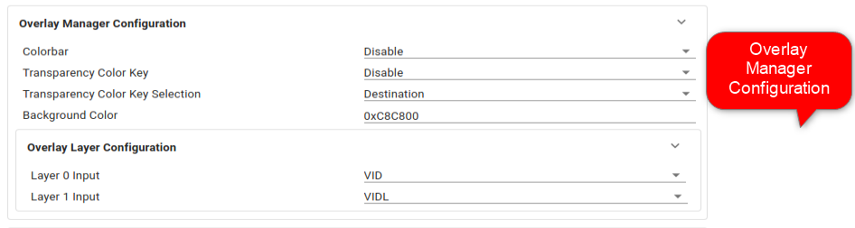
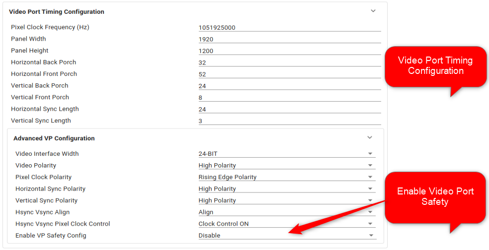
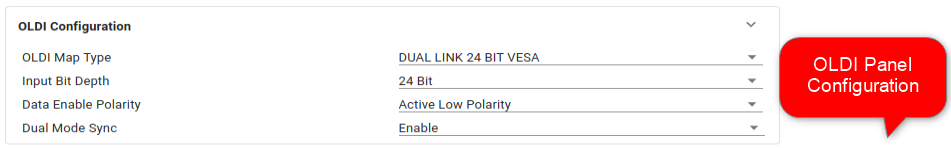

The Display Subsystem (DSS) is a flexible, multi-pipeline subsystem that supports high-resolution display outputs. DSS includes input pipelines providing multi-layer blending with transparency to enable on-the-fly composition. Various pixel processing capabilities are supported, such as color space conversion and scaling, among others. DSS includes a DMA engine, which allows direct access to the frame buffer (device system memory).
Display outputs can connect seamlessly to an Open LVDS Display Interface transmitter (OLDITX), or can directly drive device pads as a Display Parallel Interface (DPI).This document has detailed API description that user can use to make use of the DSS driver.
DSS supports two types of display interfaces:
- Display parallel interface via DISPC Video Port 2 (VP2) output.
- Two low-voltage differential signaling (LVDS) interfaces, each with four data lanes and one clock lane, via Open LDI Transmitters (OLDITX0 and OLDITX1) connected to DISPC Video Port 1 (VP1) output.

DSS BLOCK DIAGRAM
Features Supported
- Support for Video Pipleline configuration for VID and VIDL.
- Support configuration for Video port configuration for VP1 and VP2.
- Support configuration for single link and dual link OLDI panel on VP1.
- Support for DPI configuration for VP2.
- Support for RGB 16-bit, RGB 32-bit, RGB 64-bit, RGB 24-bit and YUV frame formats for video pipeline input.
- Support for video port timing parameters configuration.
- Support configuration display plane zorder for Overlay manager OVR1 and OVR2.
- Support for scaling on VID video pipeline.
- Support for background color programming for Overlay manager OVR1 and OVR2.
- Support for colorbar test pattern generation from OVR1 and OVR2.
- Alpha blending support: embedded pixel alpha (ARGB and RGBA), global pixel, combination of global pixel and pixel alpha.
- Support for display sharing with HLOS with VIDL pipeline, OVR1 and VP1 in control of MCU and zorder configuration controlled by MCU.
Safety Features:
- Support for 4 programmable (position/size) safety check regions on each display output.
- Support for 1 safety check region on each input video pipeline output.
- Support for MISR (Multiple Input Signature Register) on each safety region, used to perform data correctness check and/or freeze frame detection.
SysConfig Features
- Configuration for selecting single pipeline or dual pipeline.
- Configuration to select Display sharing with HLOS.

DSS Global Configuration
- Configuration for VID and VIDL pipelines.

VID and VIDL Configuration
- Configuration for Overlay manager.

Overlay Manager Configuration
- Configuration for Video port and timing parameters.

Video Port Configuration
- Configuration for OLDI panel.

OLDI Panel Configuration
- Configuration for Video port safety regions.

Video Port Safety
- Configuration for VID and VIDL pipeline safety regions.

Video Pipeline Safety
Features NOT Supported
- Programmable VC1 range mapping
- Luma Key generation.
- Gamma correction
- Bitmap frame input format.
- Color space conversion at video port.
Failure Prevention Guidelines for Applications
Application developer must take care of the following guidelines to avoid failures:
- The application developer should ensure that chrominance re-sampling is not bypassed when using YUV420/YUV422 frame formats.
- The application developer should refer to the documented guidelines for setting the appropriate Color Space Conversion (CSC) coefficients, to maintain accurate color reproduction.
- The application developer should verify that the configured position ensures the entire image is displayed within the screen boundaries.
- The application developer should ensure that both input and output sizes are explicitly configured, if scaling is enabled
- The application developer should set the correct horizontal and vertical synchronization (HSYNC/VSYNC) parameters based on the display requirements.
- The application developer should configure the pixel clock according to the pixel format requirements.
- The application developer should configure QoS to provide sufficient bandwidth for DSS.
- The application developer should set a sufficiently high pre-load value in DSS based on the use case before starting the stream.
API
APIs for DSS
 1.8.20
1.8.20